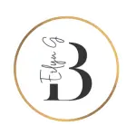

La mayoría de los cursos terminan siendo un PDF que nadie vuelve a abrir. Yo diseño desde otra pregunta: ¿qué tiene que pasar en la mente de quien aprende para que algo realmente cambie?
Estructuro el conocimiento para que la mente lo retenga. No diseño contenido — diseño el recorrido cognitivo que lleva del saber al hacer.
El recurso más escaso no es el tiempo, es el foco. Diseño experiencias que lo capturan y lo sostienen — sin trucos, con arquitectura.
El objetivo no es que las personas sepan más. Es que actúen diferente. Aplico economía del comportamiento para que el aprendizaje se convierta en hábito.
La mayoría de los proyectos llegan con una solución ya definida. Mi trabajo empieza antes — en las preguntas que nadie hizo. El formato siempre es la última decisión, nunca la primera.
Primero el resultado esperado, luego la evidencia de logro, al final la experiencia que lo hace posible. El contenido nunca precede al propósito.
Cada decisión de diseño descansa sobre un principio verificable con autor y año — no sobre convención instruccional.
No qué necesita saber — qué necesita hacer. Esta pregunta reencuadra el proyecto desde el inicio: el objetivo nunca es un certificado, es un cambio observable en la conducta de alguien.
Un bloqueo es lo que impide que el aprendizaje ocurra o se convierta en acción. Puede ser cognitivo — el cerebro recibe más de lo que puede procesar. Emocional — el aprendiz no se identifica con el tema. O de acceso — el conocimiento existe pero no está disponible cuando se necesita. Identificar cuál es cambia completamente lo que hay que diseñar.
Cada bloqueo tiene un principio que lo resuelve. La pre-suasión de Cialdini resuelve el acceso cognitivo bajo presión. Bjork resuelve la falta de transferencia. El principio dicta cuándo, cómo y dónde intervenir — antes de decidir qué construir.
Solo aquí aparece el formato. Y ya no es una decisión — es una consecuencia lógica de las tres preguntas anteriores. Lo que define el formato es el bloqueo y el principio, no la preferencia del cliente.
Cada proyecto parte de un diagnóstico — no de un formato. El caso de estudio muestra el pensamiento, no solo el resultado.
Intervención de 3 min pre-reunión basada en pre-suasión, carga cognitiva y priming lingüístico.
Auditoría de 5 dimensiones con marco teórico + DDI completo de rediseño para el estudiante que el curso ignoró.
Simulación donde el fallo es el mecanismo de aprendizaje. El contenido aparece cuando el participante lo necesita — no antes.
Cada caso de estudio muestra el pensamiento, no solo el resultado. Las cuatro preguntas del método aplicadas a un problema real — el diagnóstico, el principio científico que lo resuelve y lo que se descartó en el camino.

Empecé estudiando Bioanálisis. Luego me di cuenta de que lo que más me interesaba no era el laboratorio — era entender por qué las personas aprenden de cierta manera y de otras no.
Hoy diseño experiencias de aprendizaje que combinan psicología conductual, economía de la atención y diseño UX. No para hacer cursos más bonitos — sino para que algo en la mente del aprendiz se mueva de verdad.
He visto cómo muchos cursos corporativos terminan siendo un PDF que nadie vuelve a abrir. El problema no es de contenido — es de arquitectura del aprendizaje. Y eso es exactamente lo que diseño.
Cada servicio parte del mismo lugar: el diagnóstico del bloqueo real. El formato es siempre la última decisión.
Analizo tu curso con tres lentes teóricos e identifico exactamente dónde el diseño trabaja en contra del aprendizaje.
para quien tiene un curso que no funcionaDesde el diagnóstico del bloqueo hasta el prototipo funcional en HTML/CSS/JS con integración SCORM o xAPI.
para quien necesita construir algo nuevoIntervenciones justo a tiempo para los momentos de mayor presión. Existe en el espacio entre lo que la persona ya sabe y lo que necesita ejecutar ahora mismo.
para quien necesita apoyo en el momento críticoCuando el problema no es un curso — es una arquitectura completa. Diagnostico las fricciones estructurales y diseño la estrategia de intervención.
para líderes de L&D con problemas sistémicosNo hace falta que llegues con la solución definida. Llega con el problema. La primera conversación es para entender qué está bloqueando — no para venderte un formato.
Antes de proponer cualquier solución, necesito entender el bloqueo real. La primera sesión es siempre de escucha y análisis.
Cada proyecto incluye documentación del pensamiento de diseño — qué se construyó, qué se descartó y por qué.
Disponible para proyectos de largo plazo o consultorías puntuales en cualquier zona horaria.